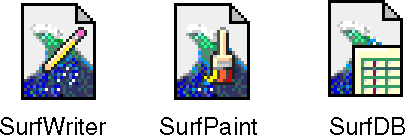
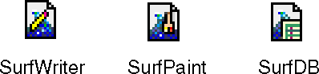
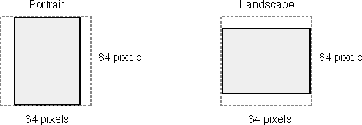
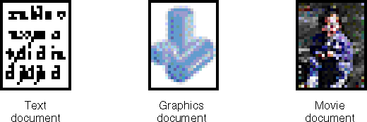
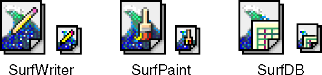
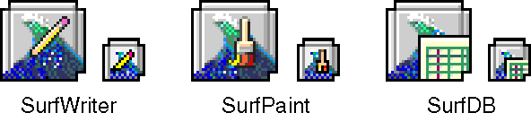
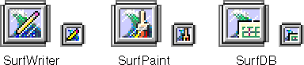
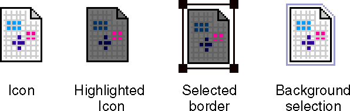

Icons
This section discusses the icons that represent the software entities that you create: parts, stationery, part editors, and part viewers.Part Icons
This section describes the icons that you provide for parts. You need to provide part icons in three sizes (large, small, and thumbnail), and three bit depths
(1 bit, 4 bit, and 8 bit, for display on monitors of different capabilities).Large Icon
The large icon size for a part is 32-by-32 pixels. The default part icon is shaped like the outline of a page with a turned-down right corner.The part icon represents the content of a part. It can represent a document or one part of a document. This icon is the same shape as document icons created by conventional applications, reinforcing the idea that OpenDoc parts are similar to other documents with which the user is familiar. You should provide this icon in three bit depths, 1 bit, 4 bit, and 8 bit, to be displayed on mono-
chrome and color monitors. Figure 12-2 shows an example of a generic 32-by-32-pixel icon in grayscale.Figure 12-2 A 32-by-32-pixel part icon
You can customize your large part icon by adding graphic elements to the document page. These graphics may relate to the kind of content that your part editor creates, or to your part-editor icon (see "Part-Editor Icons" shows some examples of part icons customized for different parts. Color Plate 4 at the front of this book shows an example of a custom large part icon in three bit depths.
Use the shape of the document icon unless the content your part editor creates is fundamentally different from that of most documents. For example, QuickTime documents look like film, and database icons usually have an image that resembles the traditional storage medium for large amounts of data (stacked disks).Small Icon
Small icons are 16-by-16 pixels. A small icon should have the same content as a 32-by-32-pixel icon, but you can optimize it for this size. See the chapter "Icons" of Macintosh Human Interface Guidelines for instructions on designing and customizing small icons. Don't eliminate significant elements of the icon design, or the smaller version may look significantly different from the larger version. You also need to provide this icon in the three bit depths, 1 bit, 4 bit, and 8 bit. Figure 12-4 shows a generic example of the small part icon in grayscale.Figure 12-4 A 16-by-16-pixel part icon
You can customize this icon just as you do the large icon. Figure 12-5 shows some examples of custom small icons. Color Plate 4 at the front of this book shows an example of a custom small part icon in three bit depths.Figure 12-5 Custom 16-by-16-pixel part icons

Thumbnail
Larger than the other part icons, the thumbnail icon shows a miniature representation of the first image of a part's content. For example, a thumbnail for a page-oriented document would show a representation of the content of one of the pages. The thumbnail icon is 64-by-64 pixels.Because of its size, the thumbnail icon can make its part more recognizable than a large or small icon can, because some of the part's content is shown (although scaled down). When parts are viewed as icons in documents, the thumbnail icon provides additional feedback about the part's content. The thumbnail icon can also appear in some dialog boxes. You should provide this icon in three bit depths, 1 bit, 4 bit, and 8 bit, to be displayed on monochrome and color monitors. OpenDoc does not provide a resource for this icon. Your part editor creates the thumbnail at runtime.
The image on the thumbnail icon is called a poster page. The first page of the part is usually set as the default poster page. Your part editor can allow the user to determine which page of the document appears as the poster page. You should regenerate the thumbnail for a document each time the document is saved.
The thumbnail icon takes up a 64-by-64-pixel square, not all of which may be needed to display the poster page. You can set the size or orientation of the poster page as appropriate within the square to show a reasonable approxi-
mation of the part's content. You can add additional content outside of the poster page, but within the square, if it represents the actual content of the part more faithfully. Figure 12-6 shows two typical thumbnail shapes within the 64-by-64-pixel square.Figure 12-6 Dimensions of the thumbnail icon

Figure 12-7 shows sample thumbnail icons for different kinds of parts. Each thumbnail icon will appear unique, displaying a representation of its content. Therefore, you shouldn't attempt to provide a default thumbnail icon for your part.Figure 12-7 Sample thumbnail icons

Stationery Icons
A stationery pad is a template with which the user can create a document or embed a part in a document. Stationery pads may have extensive content, such as a form, or they may have no content at all. Users can create stationery from existing parts or documents by clicking the Stationery checkbox in the Document Info dialog box.Because users most commonly generate new parts and documents through stationery, you should in general deliver stationery pads with your editor and should consider them the principal tool for creating parts of your part kind. Stationery serves as an inexhaustible source of new parts, and it is difficult to change or destroy it accidentally. You may choose to include several stationery pads as examples. Users can drag a stationery pad into a document to open a new frame onto a part represented by the stationery.
The stationery icon shows the outline of a page, similar to the page in the document icon, but with the lower-right corner turned up and a second page visible in the background. Figure 12-8 shows a generic stationery icon in grayscale in two sizes. Color Plate 1 at the front of this book shows the same pair of default stationery icons in three bit depths.
Figure 12-8 Stationery pad icons
You can customize your stationery icon by adding graphic elements to the stationery document page. This icon should relate visually to the part icon and the part-editor icon. Figure 12-9 shows some examples of custom stationery pad icons in gray scale. Color Plate 4 at the front of this book shows an example of custom stationery icons in three bit depths.Figure 12-9 Custom stationery icons

The name of the stationery pad you create should indicate its purpose. For example, a stationery pad that creates a medical form might be called Medical Form. For stationery pads that have no initial content, use the name of the category or the product. For example, a graphics part stationery pad might be called Drawing. Don't use the word stationery in the name.When the user employs a stationery pad to create a document or a part, the part initially has the name of the stationery pad plus a unique number (such as "Medical Form 1"). The user can assign the document or part a name by opening the Document Info dialog box (Figure 11-14
Part-Editor Icons
A part editor is software that manipulates and displays a part's content and provides the user interface for that part. The user interface of a part editor usually includes menus, tool palettes, rulers, dialog boxes, and alert boxes.The part-editor icon is a square shape with grayscale shading to give the illusion of three dimensions. Its resemblance to the OpenDoc logo makes it easily recognizable to users as a part-editor icon. You should provide this icon in the large and small icon sizes and in three bit depths, 1 bit, 4 bit, and 8 bit. Figure 12-10 shows the default part editor icon in grayscale. Color Plate 2 at the front of this book shows the same pair of default part-editor icons in three bit depths.
Figure 12-10 Part-editor icons
You should customize your part-editor icon with an image that provides continuity between the part-editor icon and its corresponding part icon. Make the image extend to the outline of the icon space. Don't add pixels to the outline of the part-editor icon or outside of its shape. Create the icons to take full advantage of each size, making sure that they maintain the critical visual elements so as to appear as different sizes of the same icon.Because your part icons are displayed far more often than your part-editor icons, you should probably design your part icons first. Then, adapt their basic graphic elements to your large part-editor icons, and finally simplify them for the small icons. Use the icon resource templates provided with OpenDoc to create icons that conform to these guidelines. Figure 12-11 shows examples of custom part-editor icons in grayscale. Color Plate 4 at the front of this book shows an example of custom part-editor icons in three bit depths.
Figure 12-11 Custom part-editor icons

Because they normally deal only with parts, users will rarely see the part-editor icon. It appears in some dialog boxes in small icon size.
- Part-editor icons in alert boxes
- In most circumstances, when a conventional application displays an alert box it draws one of the standard Note, Caution, or Stop icons in the box, as described in Macintosh Human Interface Guidelines. However, because OpenDoc editors are less visible to the user than conventional applications, you should display your part-editor icon in the alert box in place of one of the standard icons if your part editor is reporting an error about itself--for example, if it cannot acquire enough memory or if some expected file is missing.

Part-Viewer Icons
A part viewer is a part editor that allows a user to view or print parts but not to modify or save part data. Part viewers facilitate the effective distribution of documents to people who do not all share the same set of part editors. People receiving a part viewer along with a document can read the viewer's parts in the document but cannot change them. Developing a part viewer and distributing it widely protect your investment in your part editor, because the use of a part viewer allows users to share information created with your editor without illegally giving it away. Wide distribution of a part viewer can also increase the demand for your editor, as more and more users read your parts and want to edit them.The part-viewer icon is related to the part-editor icon. It has the same square shape but with a recessed center area with reflective streaks that suggest a monitor view. You should provide this icon in the large and small icon sizes and in three bit depths, 1 bit, 4 bit, and 8 bit. Figure 12-12 shows the default part-viewer icon in grayscale. Color Plate 3 at the front of this book shows the same pair of default part-viewer icons in three bit depths.
Figure 12-12 Part-viewer icons
You should customize your part-viewer icon so that there is continuity of design between the part-viewer icon and its corresponding part-editor icon. To distinguish this icon from the part-editor icon, keep the visual elements inside of the monitor space, rather than extending them to the icon's outline. It's a good idea to start designing your part-viewer icons by using the resource templates provided with OpenDoc. Because of its limited area and its visibility in the interface, you should keep the small icon in mind when designing the large size. Figure 12-13 shows some custom part-viewer icons in grayscale in two sizes. Color Plate 4 at the front of this book shows an example of custom part-viewer icons in three bit depths.Figure 12-13 Custom part-viewer icons

Selected Icon Appearance
The user can select a part represented in any of the icon view types. The selection procedure is the same as for icons in the Mac OS Finder. The user positions the pointer over the icon and presses and then releases the mouse button to select the icon. The containing part then displays the highlighted appearance of the icon, which may vary according to the selection model of the containing part. If the containing part displays selections with color highlighting or inverse video, the selected icon should appear darker (as in the Mac OS Finder). If the containing part instead marks selections with borders and resize handles, the selected icon should show this border and four resize handles (in contrast to the usual number of eight, because of the small size of the icon). The icon within the border can have either its normal appearance or a darker (selected) appearance.When an active window containing a selected icon becomes inactive, the containing part displays a single-pixel black outline around the icon to show a background selection appearance. Figure 12-14 shows selected icons and an icon with a background selection appearance. Color Plate 5 at the front of this book shows these selected appearances in color.
Figure 12-14 Selected appearance of icons
